With these steps, you will use all the pieces together: Java, VS Code, git, and GitHub Desktop.
Open the GitHub Desktop app if it isn’t already open.
This is all a lot to take in right now! It will become clearer with practice.
Click the Clone a Repository from the Internet… button.
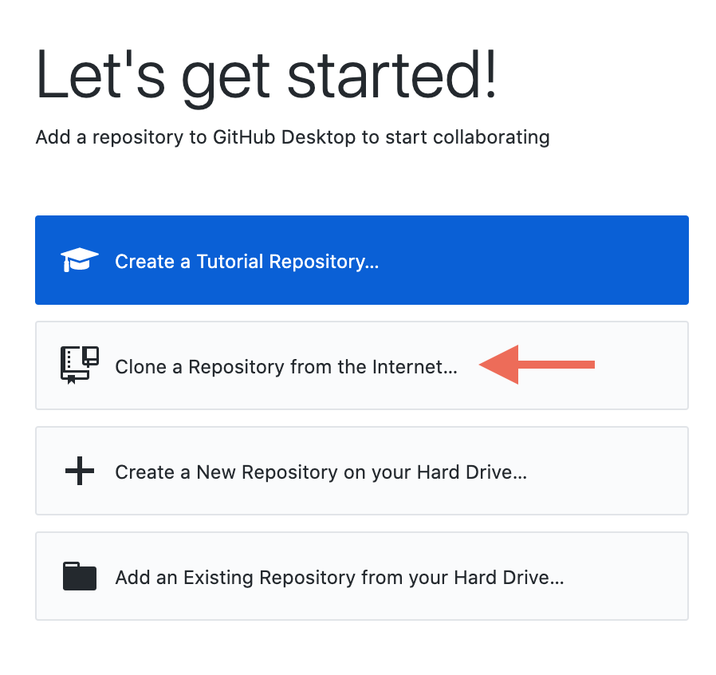This tells the app that you would like to get some code from GitHub in the cloud and copy it to your own computer. The code you are going to get is a “welcome to comp127” app that you can use to test your installation. Copying a particular bit of code from elsewhere to your computer is what we mean when we say "clone a repository".
In the “Clone a Repository” window that appears, choose URL.
Type mac-comp127/welcome-app into the “URL or
username/repository” text field. ⚠️ CAUTION:
Don’t press return/enter yet!
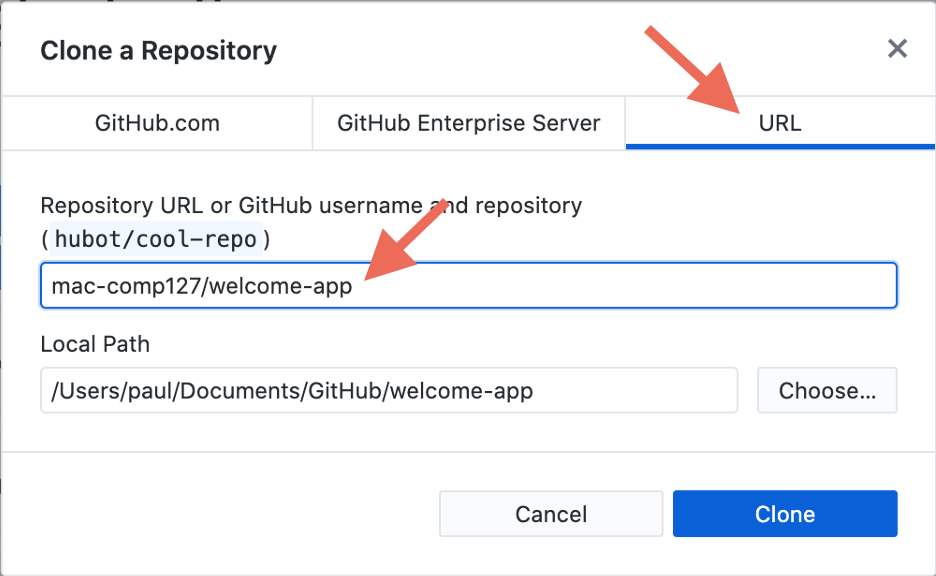
Take a look at the “Local Path” field. This tells GitHub Desktop where to
create a copy of the project on your computer:
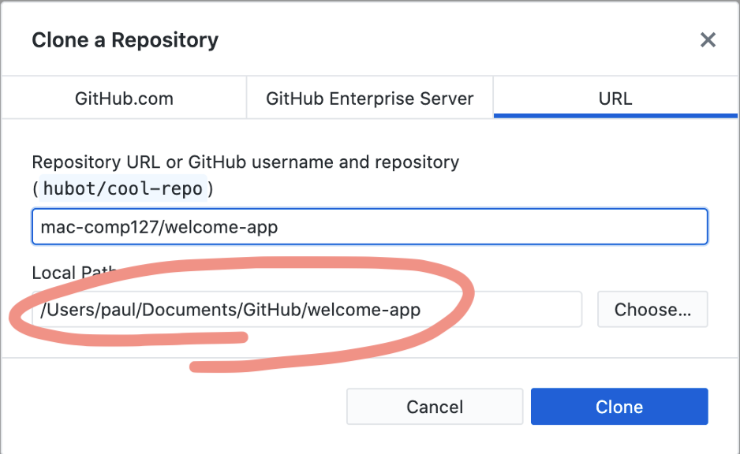
Where is Github Desktop going to put it? Is that where you want to put it? Missing these important questions is a common source of student confusion.
Perhaps you might like to create a comp127 folder for this class, and put welcome-app inside it. Perhaps you already have a system for organizing your work. Perhaps the place GitHub Desktop chose for you is perfectly fine — but you still need to note where it is.
You can choose! No sensible answer is wrong here. The only wrong answer is not paying attention.
If everything worked, you should see a window like the screenshot below. Look at the Current Repository name in the upper left; it should say “welcome-app.” If it does, then click the Open in Visual Studio Code button: 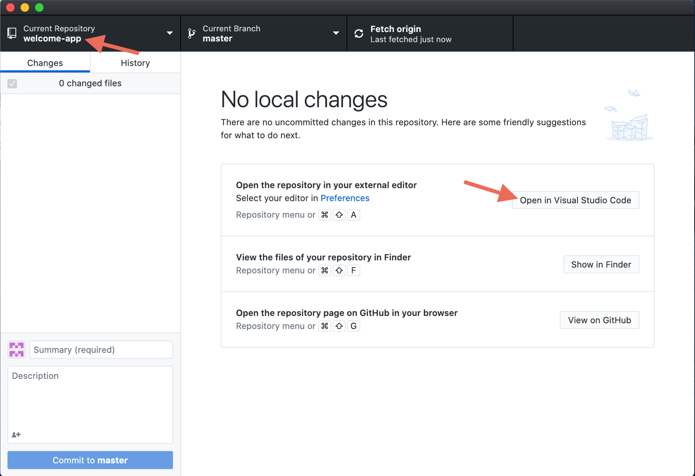
Note: You can also choose “Open in Visual Studio Code” from the Repository menu:
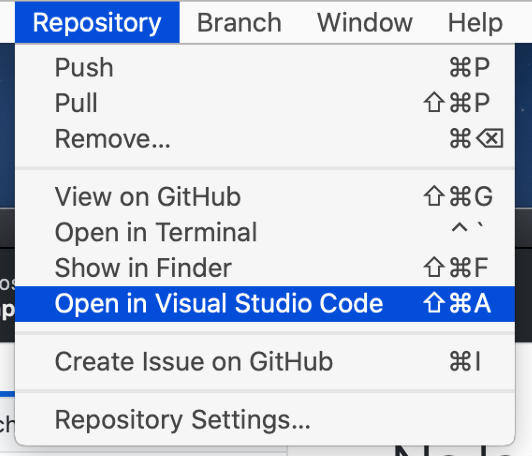
You may be prompted with this window. Select Yes, I trust the authors by clicking the green button.
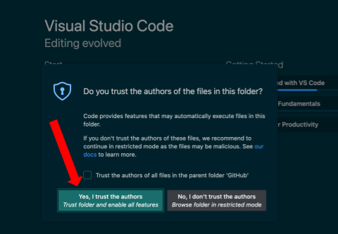If you get this message, select Always (ignoring the misplaced comma in the error message): 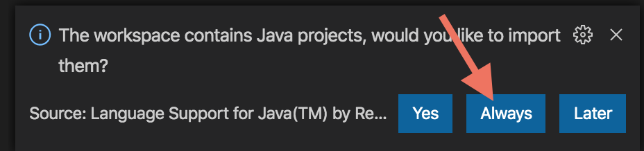
If you get a “Projects are imported into workspace” message, click Don’t Show Again.
If you get this message, select Exclude Globally:
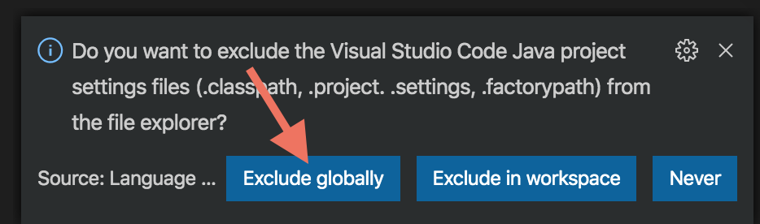If you didn’t get any of these messages, then it is possible that VS Code either can’t find the VS Code Java extension or can’t find Java itself. Continue with setup — we’ll know for sure when you try running the Welcome app!
Windows users: This happens sometimes on Windows. We aren’t sure why. Follow these instructions to fix it.
If you are not using Windows, or if you tried that and it didn’t work, then ask the instructor or a preceptor for help.
Now VS Code should show a message in the lower right saying “Opening Java Project.” VS Code is doing two things: (1) downloading dependencies, meaning other code that this project’s code depends on, and (2) building this project, meaning that it is turning the code you just cloned into something your computer can actually run.
This process is very slow the first time you open a Java project — it can take several minutes! — but it will be much faster in the future.
If you get this message, select Enable: 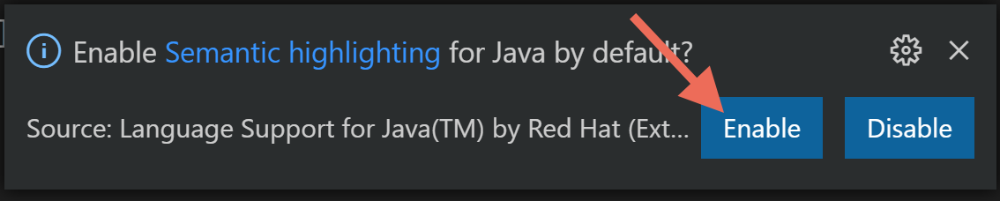
If it isn’t already selected, click the Explorer icon on the left edge of the VS Code window. Then click src (short for “source”) to see this project’s code. 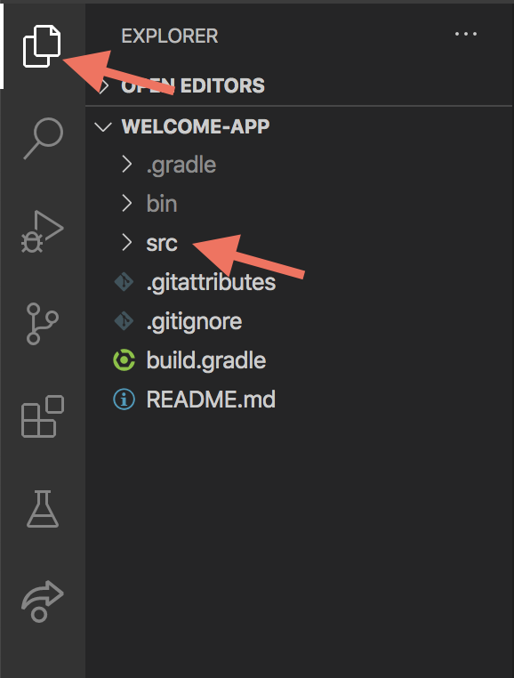
Click on Welcome.java. You should see a file with a bunch of code.
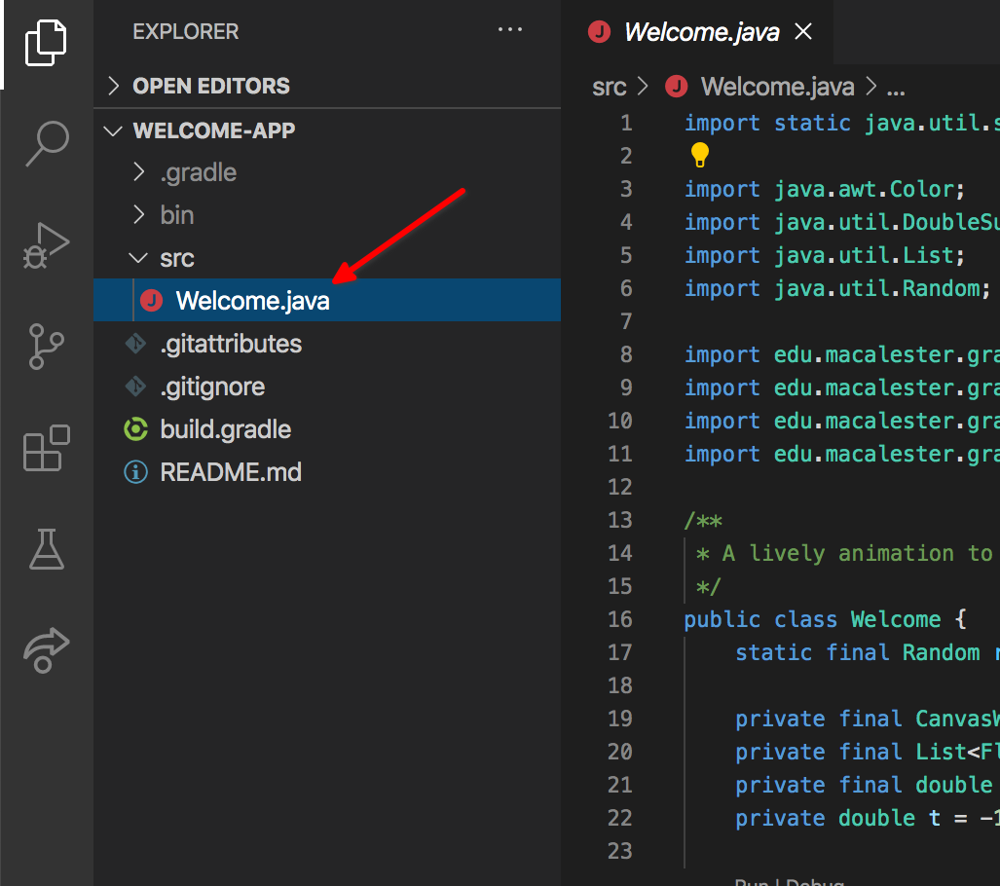Some things in that code might look familiar to you from your past experience. Much of it probably looks like complete gibberish! No matter how little or how much of it makes sense to you now, by the end of this class you’ll be able to understand all the programming language features you see here — and if some things do look familiar, you’ll know something new about the underlying principles behind them.
It’s time to run the code! Click the icon with a triangle and an insect on the left edge of the window, then click the Run and Debug button:
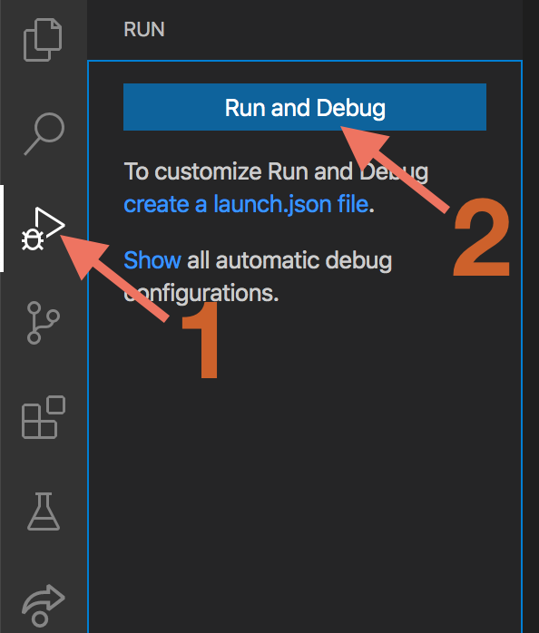If you see a window with a bunch of dancing letters like the screenshot below, congratulations! You’re up and running! 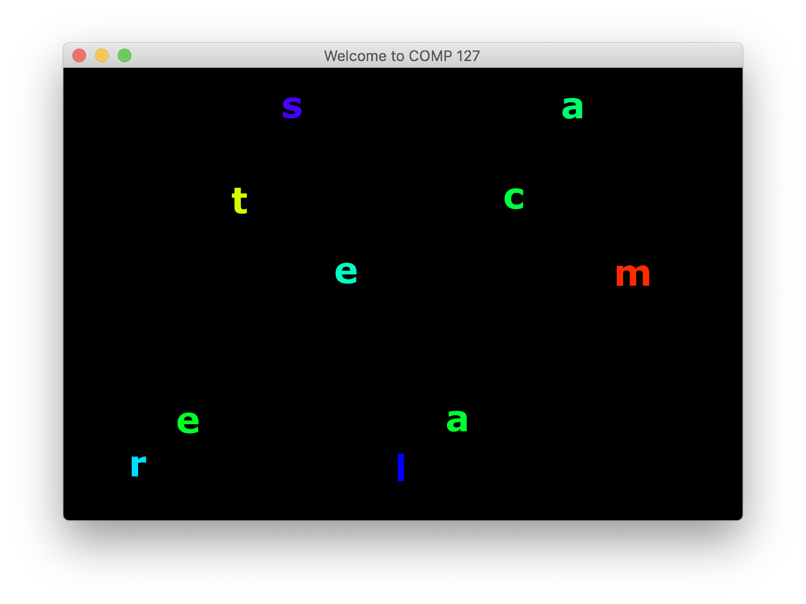